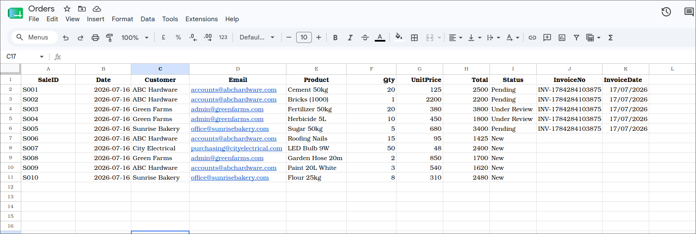
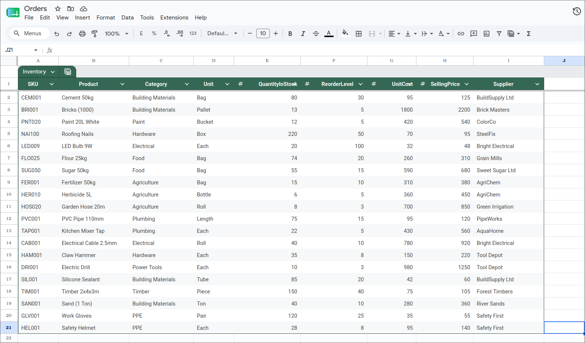
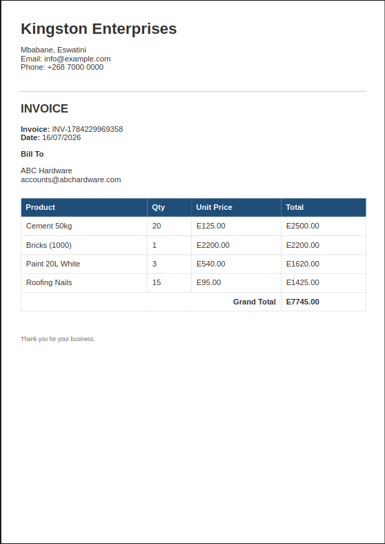
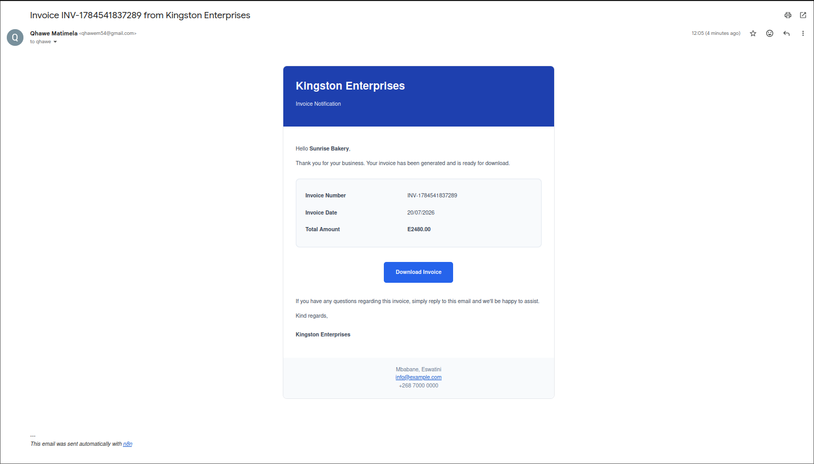
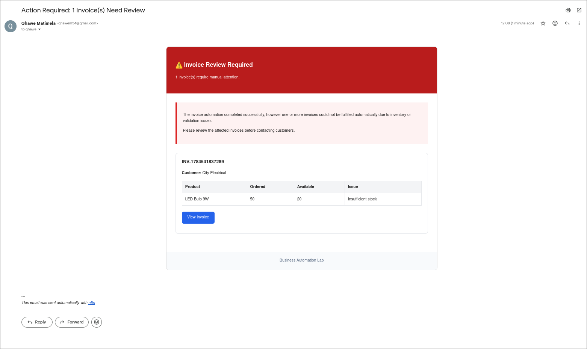

Business Workflow
End-to-end workflow from receiving a sale to generating and delivering an invoice.
Many SMEs still manage sales, invoices, inventory, and customer communication manually using spreadsheets, email, and paper-based processes. As order volumes grow, these disconnected tasks become repetitive, time-consuming, and prone to errors. Delayed invoicing, inaccurate stock records, and duplicate data entry reduce productivity and make it harder to maintain a clear view of the business.
The business can continue recording sales exactly as it does today. but employees dont have to do the same repititive tasks all day
Every sale repeats the same administrative work:
Once a sale is recorded, the subsequesnt steps get executed automatically:
click image for a better view
End-to-end workflow from receiving a sale to generating and delivering an invoice.

Sample of how the sales spreadsheet might look

Sample of how an inventory spreadsheet might look

Professional PDF invoice created automatically from sales data. fully customisable of course.

Branded HTML email with the invoice attached and download link. fully customisable of course.

Internal notification highlighting invoices that require manual attention. fully customisable of course.
This workflow describes the business process, not the software used to implement it. By focusing on the process rather than a specific platform, the solution can be adapted to fit an organization's existing systems instead of forcing them to replace them.
| Workflow Function | Possible Technologies |
|---|---|
| Workflow Orchestration | n8n, UiPath, Microsoft Power Automate, Custom JavaScript Applications |
| Sales Data Source | Google Sheets, Microsoft Excel, SQL Databases (PostgreSQL, MySQL, SQL Server) |
| Business Logic | JavaScript, SQL Queries, Python |
| Inventory Validation | JavaScript, SQL Queries, ERP APIs |
| Invoice Generation | HTML/CSS Templates, Microsoft Word Templates, PDFMonkey |
| Document Storage | Google Drive, Microsoft OneDrive, SharePoint, Local File Server |
| Customer Notifications | Gmail, Microsoft Outlook, SMTP Email Services |
| Reporting & Dashboards | Power BI, Excel Dashboards, Custom Web Dashboards |
Every business has repetitive processes. Let's discuss how they can be automated.